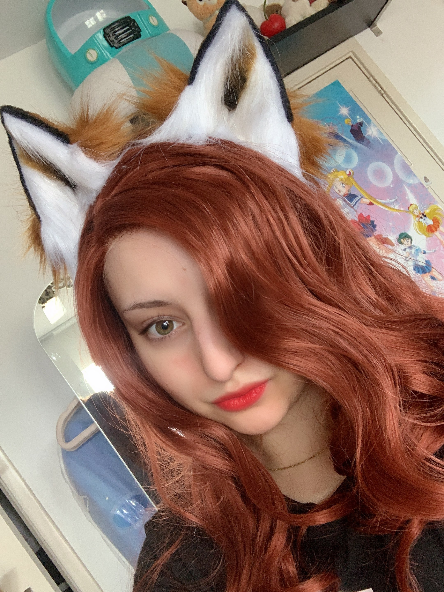

Who is Blue?

Blue could be described as your average not-so-average 19-year-old. Full of life, full of ambitions.
Excelling in multiple subjects, be it in the kitchen making Flammkuchen, gaming, cosplaying or designing actual fairy wings!
Blue is the one there for you, and the one to look up to. A kind hearted inspiring friend that is definitely worth the hype.
Watch her current follower totals and top 5 cosplays in "Blueberry Stats".
Or head over to her social media in the "Blueberry Socials" tab, join the discord server and become a friend of Blue today!!! :)